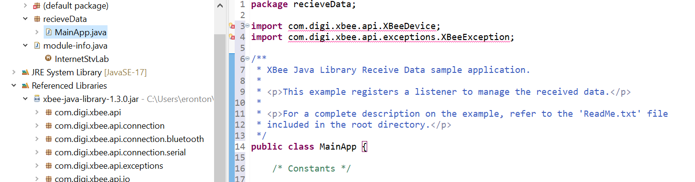

Moze netko reci malo detaljnije kako izgledaju zadaci i kako cemo znati ista napraviti ako su prezentacije i upute dosta povrsno napisane
kod waspmote pro ide dijela, trebamo li samo raspakirati onaj zip ili još nešto postavljati
mornar Ica ja sam na linuxu samo runno install.sh i instaliro se, doda se precac sam i sve postavi, nakon tog otvoris ide
Zna li netko kako poslati vrijednost s temperaturnog senzora mrežnom prilazu?
Je li tko rješio teoretske zadatke iz zadataka za labos (konkretno zadatci za mrežni prilaz Waspmote)?
U ZB_02a_router_joins_known_network primjeru, zasto se nigdje ne zadaje 16-bit PAN id? Kolko am skuzio, i 64-bit i 16-bit PAN id jednoznaöno definiraju mrežu.
ZB_02a_router_joins_known_network
NISAM ASISTENT Koordinator automatski postavlja 16bit PAN ID kad stvori mrežu i automatski ju dodijeljuje čvorovima koji se spoje (ne treba im za spajanje). Ne može se ručno podesiti.
 Jel možda netko kuži zasto mi nece importati ove librarije iz referneced libraries, nis se u javu ne kuzim
Zulul
stavi requires xbee.java.library; u module-info.java
requires xbee.java.library;
Uređaj waspmote, jel zna neko odgovor na pitanje 4. i) Kako osigurati da se uređaj Waspmote spoji kao krajnji uređaj?
Exelero Ako sam dobro shvatio treba samo postaviti sleepMode na neki ≠ 0 npr. xbeeZB.setSleepMode(1);
Ovo piše u dokumentaciji When ‘Sleep Mode’ changes to a non-zero value, the node leaves the PAN and rejoins it as an End Device.
Geralt of Rivia Kaze mi can’t be resolved to a module.
Dojmovi danas s labosa?
pingvinka mišljenje osobe koja je radila router: prilično jednostavno, 95% koda se može kopirati sa njihovih primjera, a ako negdje zapne skočir je u dvorani i možete ga pitat štogod
Može li netko od kolega koji su radili router napisati koji su rezultati kada se mijenja power level, nisam to stigao istestirati?
Dojomovi s waspmote dijela?
Je li ispitivao teoriju ili se samo rade ovi zadaci?
Zulul Samo se rade zadaci koji su zadani u onom dokumentu. Ako zapnes negdje asistent je vise nego voljan pomoci i objasniti (uz napomenu da sve pise u pipremi, ali svejedno pomogne).
Jel se salju podaci u binarnom ili ascii obliku?
foobar msm da ascii